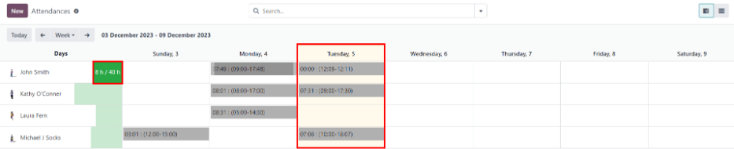
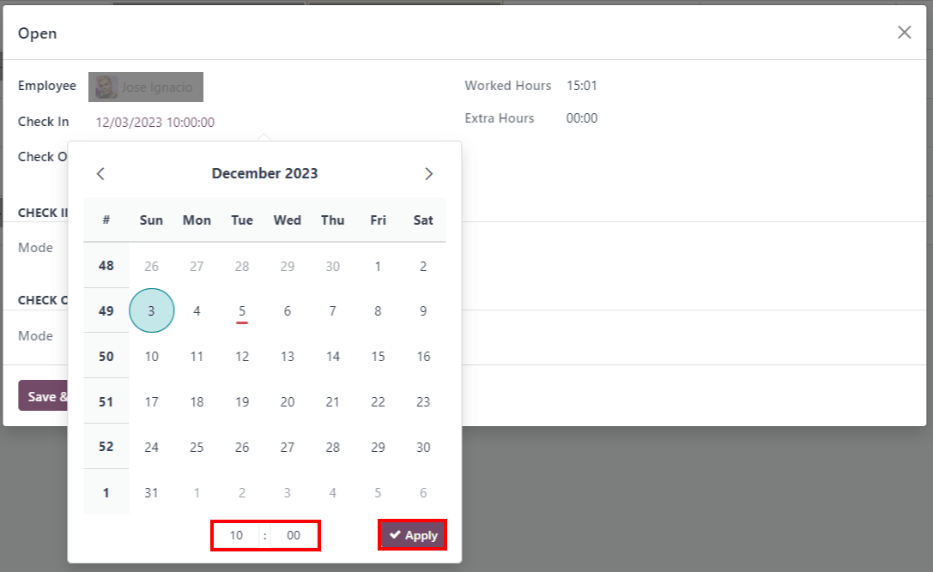
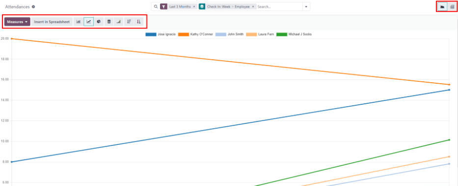

การลงเวลางาน¶
แอปพลิเคชัน ระบบลงเวลา ของ Odoo ทำหน้าที่เป็นนาฬิกาบอกเวลา พนักงานสามารถเช็คอินและออกจากงานได้โดยใช้อุปกรณ์เฉพาะในโหมดคีออสก์ ในขณะที่ผู้ใช้ยังสามารถเช็คอินและออกจากงานได้โดยตรงจากฐานข้อมูล ผู้จัดการสามารถดูได้อย่างรวดเร็วว่าใครว่างในเวลาใดก็ตาม สร้างรายงานเพื่อดูชั่วโมงทำงานของทุกคน และรับข้อมูลเชิงลึกว่าพนักงานคนไหนทำงานล่วงเวลา หรือเช็คเอาต์งานเร็วกว่าที่คาดไว้
สิทธิ์การเข้าถึง¶
It is important to understand how the different access rights affect what options and features users can access in the Attendances application.
Every user in the database is able to check in and out directly from the database, without needing access to the Attendances application. Additionally, all users can access their own attendance records from their employee form in the Employees app.
Access to both the Attendances application, and the various features within the application is determined by access rights.
หากต้องการดูสิทธิ์การเข้าถึงของผู้ใช้ ให้ไปที่ แล้วคลิกที่ผู้ใช้แต่ละคน แท็บ สิทธิ์การเข้าถึง จะปรากฏให้เห็นตามค่าเริ่มต้น เลื่อนลงไปที่ส่วน ทรัพยากรบุคคล เพื่อดูการตั้งค่า สำหรับช่อง การลงเวลา มีตัวเลือกให้ปล่อยช่องไว้ว่าง หรือเลือก ผู้ดูแลระบบ
If the Administrator option is selected, the user has full access to the entire Attendances application, with no restrictions. They can view all employee attendance records, enter Kiosk mMode from the application, access all reporting metrics, and make modifications to the settings. If left blank, the user does not have access to the Attendances application.
ผู้อนุมัติ¶
สถานการณ์อื่น เท่านั้น ที่สามารถเข้าถึงข้อมูลที่แตกต่างกันในแอปพลิเคชัน ระบบลงเวลา นั้นมีไว้สำหรับผู้อนุมัติ หากผู้ใช้ ไม่มี สิทธิ์ของผู้ดูแลระบบสำหรับแอปพลิเคชัน ระบบลงเวลา แต่ได้รับการตั้งค่าให้เป็นผู้อนุมัติของพนักงานสำหรับแอปพลิเคชัน ระบบลงเวลา ผู้ใช้นั้นจะสามารถดูบันทึกการเข้างานของพนักงานคนใดคนหนึ่งนั้นได้ ตลอดจนทำให้ การแก้ไขบันทึกการเข้างานของพนักงานคนนั้น หากจำเป็น สิ่งนี้ใช้กับพนักงานทุกคนที่มีผู้ใช้อยู่ในรายชื่อผู้อนุมัติแอปพลิเคชัน ระบบลงเวลา โดยทั่วไปแล้วผู้อนุมัติจะเป็นผู้จัดการ แม้ว่าจะไม่จำเป็นก็ตาม
หากต้องการดูว่าใครคือผู้อนุมัติการเข้างานสำหรับพนักงาน ให้ไปที่ และคลิกที่พนักงานที่ต้องการ คลิกที่แท็บ ข้อมูลงาน เลื่อนไปที่ส่วน ผู้อนุมัติ และตรวจสอบช่อง ระบบลงเวลาทำงาน ผู้ที่ได้รับเลือกสามารถดูบันทึกการเข้างานของพนักงานนั้น ได้ทั้งบนแดชบอร์ดแอปพลิเคชัน ระบบลงเวลาทำงาน และในรายงานการเข้างาน และทำการแก้ไขบันทึกของพวกเขาได้
การกำหนดค่า¶
Few configurations are needed in the Attendances application. Determining how employees check in and out, defining how the kiosks function, and determining how extra hours are computed are all set in the Configuration menu. Navigate to the to access the configuration menu.
โหมด¶
Attendances from Backend: activate this selection to allow users to check in and out directly from the Odoo database. If this is not activated, users must use a kiosk to check in and out of work.
ชั่วโมงเพิ่มเติม¶
This section specifies how extra time is calculated, including when extra time is counted and what time is not logged.
Count of Extra Hours: enable this box to allow employees to log extra hours beyond their set working hours (sometimes referred to as overtime). Activating this selection displays the following settings as well. If this is not activated, no other configurations appear.
Start From: the current date is automatically entered in this field. If desired, click on this field and use the calendar selector to modify the start date on which extra hours are logged.
Tolerance Time In Favor Of Company: enter the amount of time, in minutes, that is not counted towards an employee's overtime. When an employee checks out, and the extra time logged is below the specified minutes, the extra time is not counted as overtime for the employee.
เวลาเผื่อเพื่อประโยชน์ของพนักงาน: ป้อนระยะเวลาเป็นนาทีที่พนักงานได้รับ ซึ่งจะ ไม่ ส่งผลเสียต่อการเข้างาน หากพวกเขาบันทึกเวลาน้อยกว่าชั่วโมงทำงาน เมื่อพนักงานเช็คเอาท์ และเวลารวมที่บันทึกไว้ในวันนั้นน้อยกว่าชั่วโมงทำงานที่ระบุและน้อยกว่าระยะเวลาผ่อนผันที่ระบุ พนักงานจะไม่ ถูกลงโทษ สำหรับชั่วโมงการทำงานที่ลดลง
Example
A company sets both of the Tolerance fields to
15minutes, and the working hours for the entire company are set from 9:00 AM to 5:00 PM.If an employee checks in at 9:00 AM, and checks out at 5:14 PM, the extra 14 minutes are not counted towards their overtime.
If an employee checks in at 9:05 AM, and checks out at 4:55 PM, even though they logged a total of 10 minutes less than their full working hours, they are not penalized for this discrepancy.
Display Extra Hours: activate this box to display the extra hours logged by an employee when they check out with a kiosk, or when a user checks out in the database.
Note
Employees are still able to log overtime hours even if the Count of Extra Hours option is not activated. The difference is that when Count of Extra Hours is activated, the extra hours can be deducted from an approved time off request.
ภาพรวม¶
เมื่อเข้าสู่แอปพลิเคชัน ระบบลงเวลาทำงาน แผงควบคุม ภาพรวม จะปรากฏขึ้น โดยมีข้อมูลการเช็คอินและเช็คเอาต์ทั้งหมดสำหรับผู้ใช้ที่ลงชื่อเข้าใช้ หากผู้ใช้มีสิทธิ์ การเข้าถึง เฉพาะเจาะจง และ/หรือเป็น ผู้ให้การอนุมัติ สำหรับพนักงานเฉพาะราย ข้อมูลการเช็คอินและเช็คเอาต์เพิ่มเติมของพนักงานเหล่านั้นจะปรากฏบนแผงควบคุม ภาพรวม ด้วยเช่นกัน
มุมมอง¶
To change the view from the default Gantt chart to a list view, click the List icon in the top right of the dashboard, beneath the user's photo. To switch back to the Gantt chart, click the Gantt button, located next to the List button.
มุมมองเริ่มต้นจะแสดงข้อมูลของวันปัจจุบัน หากต้องการนำเสนอข้อมูลสำหรับ สัปดาห์, เดือน หรือ ปี ให้คลิกที่ปุ่ม วัน เพื่อแสดงเมนูแบบเลื่อนลงโดยแสดงตัวเลือกอื่นๆ เหล่านั้น เลือกมุมมองที่ต้องการ และแดชบอร์ดจะอัปเดตโดยนำเสนอข้อมูลที่เลือก หากต้องการเปลี่ยน วัน, สัปดาห์, เดือน หรือ ปี ที่นำเสนอ ให้คลิก ← (ลูกศรซ้าย) หรือ :guilabel:` → (ลูกศรขวา)` ที่ด้านใดด้านหนึ่งของเมนูแบบเลื่อนลง หากต้องการย้อนกลับไปยังมุมมองที่มีวันปัจจุบัน ให้คลิกปุ่ม วันนี้ ซึ่งจะรีเฟรชแดชบอร์ด โดยนำเสนอข้อมูลที่มีข้อมูลของวันปัจจุบัน
In the Day view, the column for the current hour is highlighted in yellow. If the Week or Month view is selected, the column for the current day is highlighted. If the Year view is selected, the current month is highlighted.
Any entries that have errors appear in red, indicating they need to be resolved by a user with the proper access rights and/or are approvers for the employee(s) with the errors.
ตัวกรองและกลุ่ม¶
หากต้องการกรองผลลัพธ์ในแดชบอร์ดภาพรวม หรือแสดงกลุ่มข้อมูลต่างๆ ให้คลิกปุ่ม 🔻 (เมนูแบบเลื่อนลงสามเหลี่ยม) ที่ด้านขวาของแถบ ค้นหา เหนือแดชบอร์ด แล้วเลือกตัวเลือก ตัวกรอง หรือ จัดกลุ่มตาม ที่มีให้เลือก มีตัวกรองและกลุ่มที่กำหนดค่าไว้ล่วงหน้าหลายรายการให้เลือกใช้ รวมถึงตัวเลือกในการสร้างตัวกรองและกลุ่มแบบกำหนดเอง
ตัวกรอง¶
The default filters that can be selected are:
My Attendances: this filter only presents the user's attendance data.
My Team: this filter presents the attendance data for the user's team.
At Work: this filter displays the attendance data for everyone currently checked in.
Errors: this filter displays any entries with errors that need to be resolved.
Check In: this filter has a drop-down to further select a specific time period. Select the desired time period from the options presented, a specific month, quarter, or year.
Last 7 days: this filter presents the attendance data for the last seven days.
Add Custom Filter: create a custom filter using the pop-up that appears when this is selected.
กลุ่ม¶
The default groups that can be selected are:
Check In: this grouping presents a drop-down menu containing the following time period options: Year, Quarter, Month, Week, and Day. Selected the time period to display all the check-in information, grouped by the selected time period.
Employee: this group presents the attendance data organized by employee.
Check Out: this grouping presents a drop-down menu containing the following time period options: Year, Quarter, Month, Week, and Day. Selected the time period to display all the check-out information, grouped by the selected time period.
Add Custom Group: this option displays a drop-down menu with a variety of options to group the attendance data by, including City, Country, Mode, and IP Address.
Attendance log details¶
Odoo captures various time and location details when a user checks in and out. The specific details provided are determined by the method the user checked in and out.
To view the specific check in and/or check out details for an employee, click on an individual entry in the overview dashboard.
A detailed attendance log for the user appears in a pop-up window. To close the detailed attendance log, click the Save & Close button in the bottom-left corner of the form.
The detailed attendance log contains the following information:
Main details¶
Employee: the name of the employee.
Check In: the date and time the employee checked in.
Check Out: the date and time the employee checked out. This only appears if the employee has checked out.
Worked Hours: the total amount of time the employee logged for the day, in an hour and minute format (HH:MM). This value calculates all the checks in and check outs for the day, if the employee checked in and out multiple times.
Extra Hours: any extra hours the employee logged that is beyond their expected working hours.
Check in/check out details¶
The following information appears for both the Check In and Check Out sections.
Mode: the method with which the attendance information was gathered. Systray is displayed if the employee logged in and out directly from the database, Manual is displayed if the employee logged in and out using an attendance kiosk.
IP Address: the IP address for the computer the employee used to log in or out.
Browser: the web browser the employee used to log in or out.
การประยุกต์ใช้: เมืองและประเทศที่เกี่ยวข้องกับที่อยู่ IP ของคอมพิวเตอร์
GPS Coordinates: the specific coordinates when the user logged in or out. To view the specific coordinates on a map, click the → View on Maps button beneath the GPS Coordinates. This opens a map in a new browser tab, with the specific location pointed out.
เกิดข้อผิดพลาด¶
Entries that contain an error appear on the overview dashboard in red. In the Gantt view, the entry appears with a red background. If in the List view, the entry text appears in red.
An error typically occurs when an employee has checked in but has not checked out within the last 24 hours, or when an employee has a check in and check out period spanning over 16 hours.
เพื่อแก้ไขข้อผิดพลาด ต้องแก้ไขหรือลบรายการการเข้างาน คลิกที่รายการเพื่อแสดงป๊อปอัปที่มีรายละเอียดสำหรับรายการนั้น ๆ หากต้องการแก้ไขข้อมูล เช็คอิน และ/หรือ เช็คเอาท์ ให้คลิกที่ช่อง เช็คอิน หรือ เช็คเอาท์ และตัวเลือกปฏิทินจะปรากฏขึ้น คลิกวันที่ที่ต้องการ จากนั้นใช้ตัวเลือกเวลาใต้ปฏิทินเพื่อเลือกเวลาที่ต้องการสำหรับรายการ เมื่อข้อมูลถูกต้อง คลิก ใช้
When all the information on the pop-up is correct, click Save & Close. When the entry no longer has an error, the entry appears in gray instead of red.
To delete an entry, click Remove on the pop-up instead of making modifications to the entry.
การรายงาน¶
To view attendance reports, click Reporting in the top menu. The default report displays each employee's attendance information for the past 3 months, in a Line Chart.
The default view is a Graph. To view the data in a pivot table, click the Pivot Table button on the top right of the report. To switch back to the graph view, click the Graph button, located next to the Pivot Table button.
To present different information, adjust the filters and groups in the same way as in the Overview dashboard.
The data can be presented in either a Bar Chart, Line Chart, Pie Chart, Stacked chart, or in Descending or Ascending order. To change the view to any of these charts, click the corresponding button above the displayed chart.
To change the Measures, click the Measures button and select the desired measure from the drop-down menu.
The report can also be inserted into a spreadsheet. Click the Insert in Spreadsheet button and a pop-up appears. Select the desired spreadsheet, and click Confirm.
See also